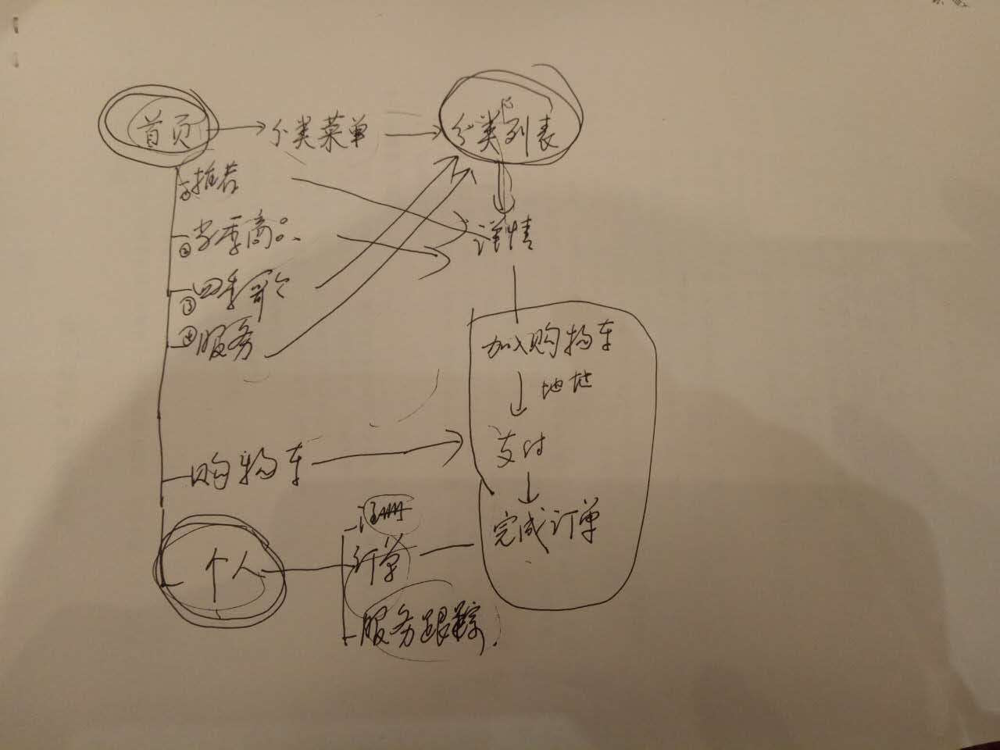
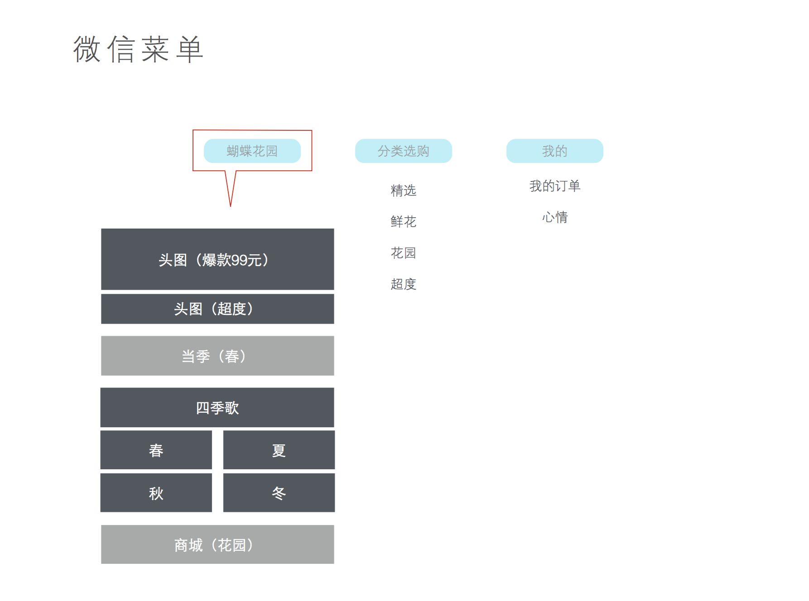
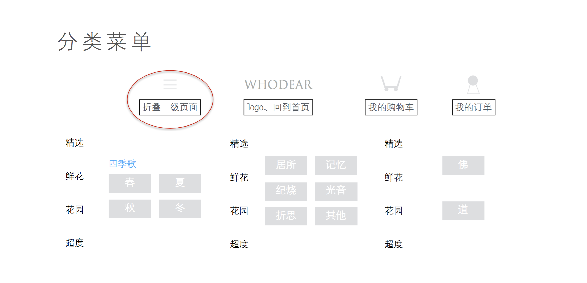
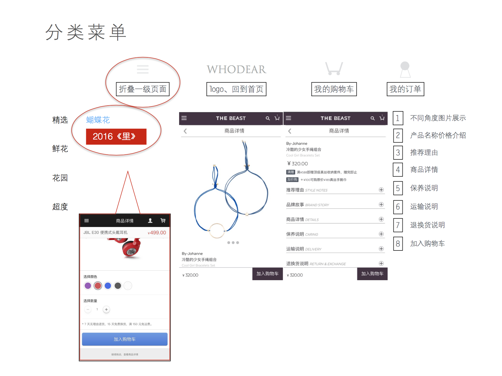
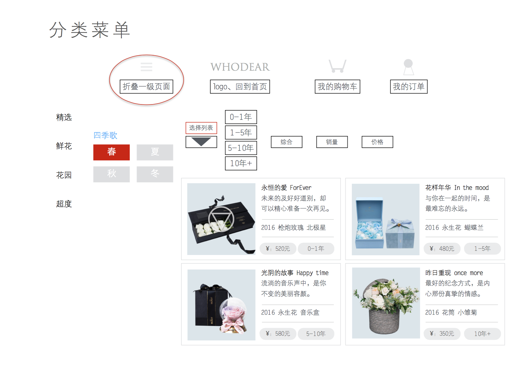
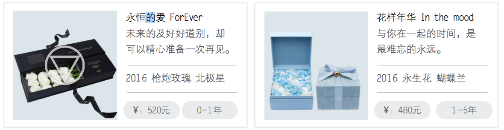
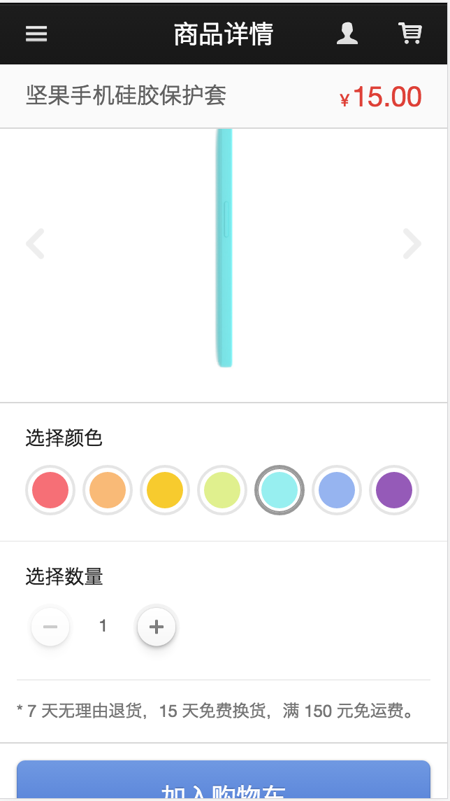

设计
流程

微信菜单设计

详细分类菜单

- 精选
- 鲜花
- 四季歌
- 春 -》分类列表
- 夏 -》分类列表
- 秋 -》分类列表
- 冬 -》分类列表
- 花园
- 居所 -》分类列表
- 记忆 -》分类列表
- 记烧 -》分类列表
- 光音 -》分类列表
- 折思 -》分类列表
- 其他 -》分类列表
- 超度
结论
添加的商品和分类有绑定
分类列表页
默认分类菜单页面

步骤拆分
- 点击菜单按钮，弹出分类菜单
- 默认显示【精选】-》蝴蝶花2016
- 点击2016《里》进入具体详情，此时可以加入购物车
- 点击头部的【我的购物车】按钮，进入购物车
- 在购物车页面结算（含支付），生成订单
- 点击头部的【我的】按钮，进入个人中心，可以查看我的订单
选中【鲜花】分类，切换【四季歌】列表，点击【春】进入到分类列表页

说明
- 分类列表页有4个筛选，排序按钮
- 年（筛选）
- 综合（排序）
- 销量（排序）
- 价格（排序）
cell

详情页

- 商品名称 + 价格￥15.00
- 头图（数组）
- 所属菜单（春）
- 所属分类（年份：0~1年）
- 备注（* 7 天无理由退货，15 天免费换货，满 150 元免运费。）
- 加入购物车
推导出商品模型
- 商品名称
- 销量（分类列表-排序）
- 价格￥15.00（分类列表-排序）
- 头图（数组）
- 所属菜单（春）
- 所属分类（年份：0~1年）
- 备注（* 7 天无理由退货，15 天免费换货，满 150 元免运费。）
- 创建时间
- 更新时间
状态
首页
原型
- 置顶轮播，点击进入详情
- 头图推荐：比如超度，点击进入分类列表
- 当季
- 四季歌
- 春，点击进入分类列表
- 夏，点击进入分类列表
- 秋，点击进入分类列表
- 冬，点击进入分类列表
- 花园商品，点击进入花园分类列表
- 最下面：网站说明
参考